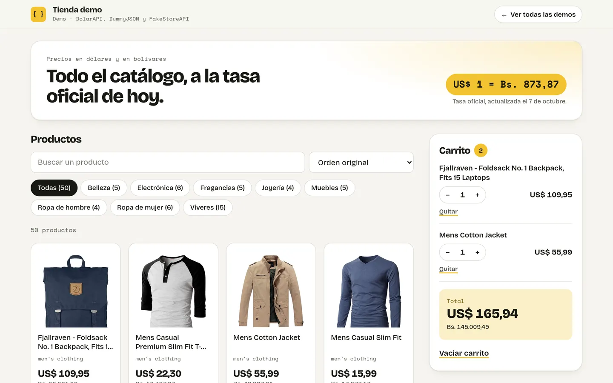
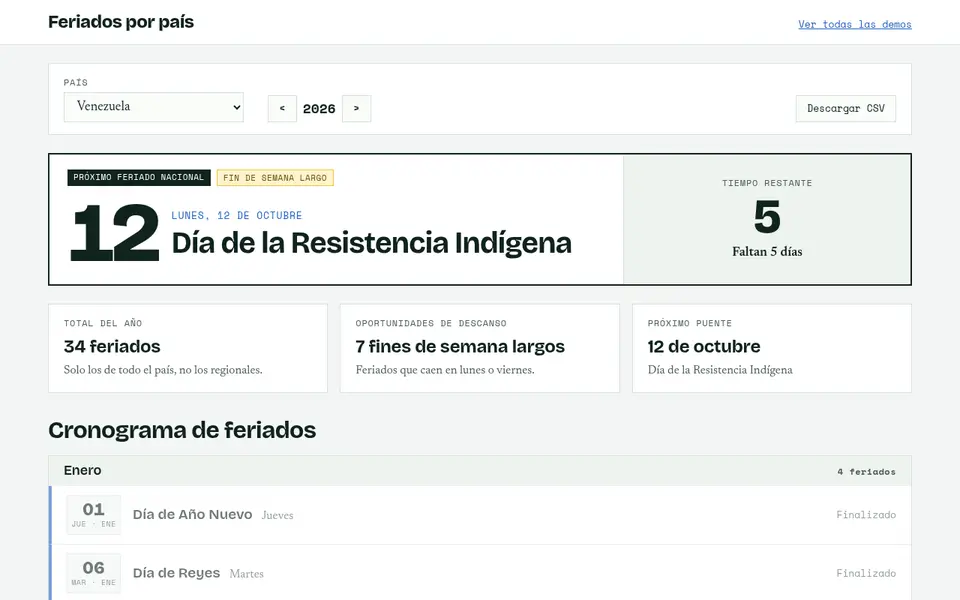
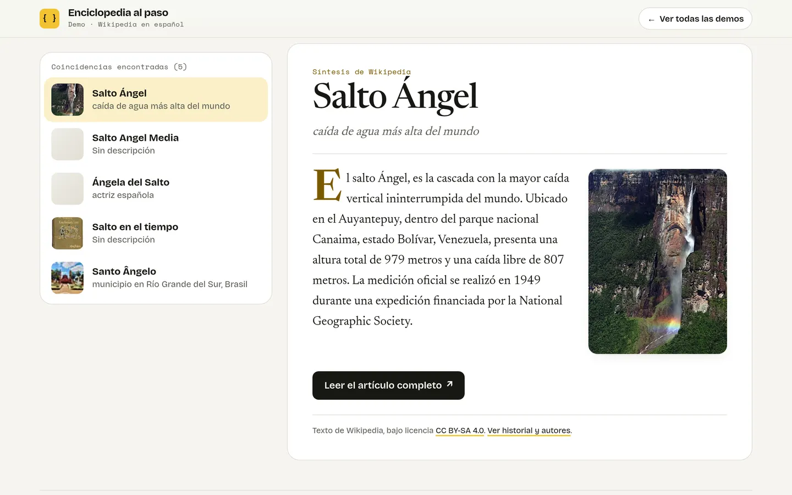

En español · sin claves · sin backend
APIs gratuitas que funcionan, probadas en apps de verdad.
Un catálogo de APIs abiertas que se vuelve a comprobar cada semana, y cinco demos que las usan desde el navegador. Abrís la página y anda: no hay servidor propio ni claves que pedir.
- APIs verificadas
- 23
- en el directorio ampliado
- 1777
- demos en vivo
- 5
- claves necesarias
- 0
Demos
Cada una usa solo APIs del catálogo, con su código y sus pruebas en el repositorio.
-
Nuevo: mapa interactivo
Ubicación
Un mapa a pantalla completa: buscá cualquier lugar, tocá un punto para saber qué hay ahí y ubicate con el GPS del teléfono o por tu IP. PhotonOpenStreetMapipwho.is -
Clima
El clima de hoy y el pronóstico de siete días de cualquier ciudad. Open-Meteo -

Tienda
Precios en dólares y en bolívares a la tasa oficial del día. Búsqueda, categorías y carrito. DolarAPIDummyJSONFakeStoreAPI -

Feriados
Los feriados del año en 20 países, con el próximo y los días que faltan. Nager.Date -

Enciclopedia al paso
Buscá un tema y leé su síntesis en español, con imagen y enlace al artículo. Wikipedia en español
Cómo entra una API al catálogo
No alcanza con que exista: tiene que responder bien hoy, desde un navegador, y con términos que se puedan cumplir.
Llamada real
Se pide su ejemplo y se exige estado 200, JSON válido y las claves esperadas. Un 200 con un error adentro no pasa.
Términos leídos
Atribución, uso comercial, límites y licencia de los datos, anotados desde la fuente. Si no están, dice «no especificado».
CORS medido
Una segunda petición con cabecera
Origin, como haría tu navegador, para saber si sirve sin backend.Cada semana, otra vez
La integración continua vuelve a llamarlas y marca las que se caen o cambian.
¿Buscás otra API?
El directorio ampliado reúne 1777 más en 51 categorías, importadas de public-apis con crédito a la fuente. Todavía sin verificar: para descubrir y después comprobar.